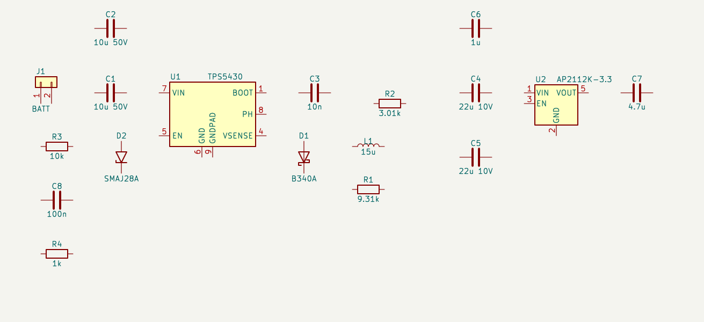
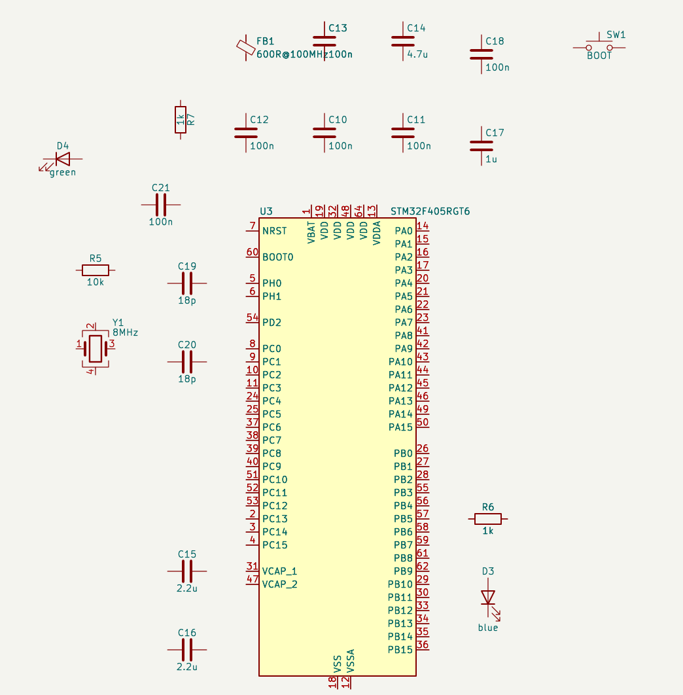
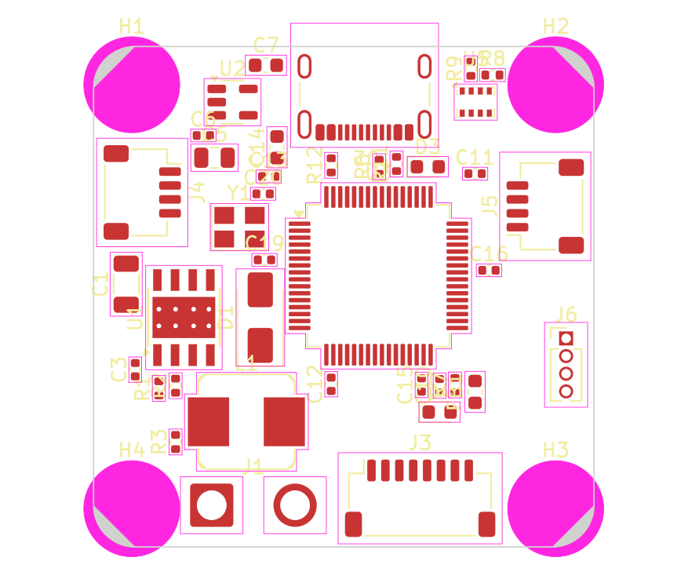
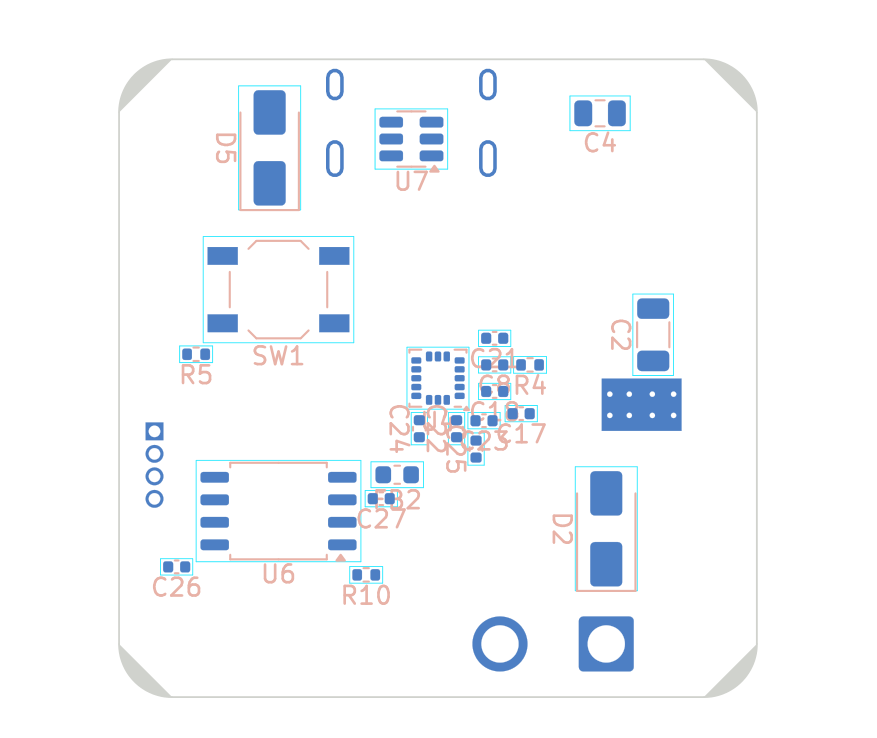
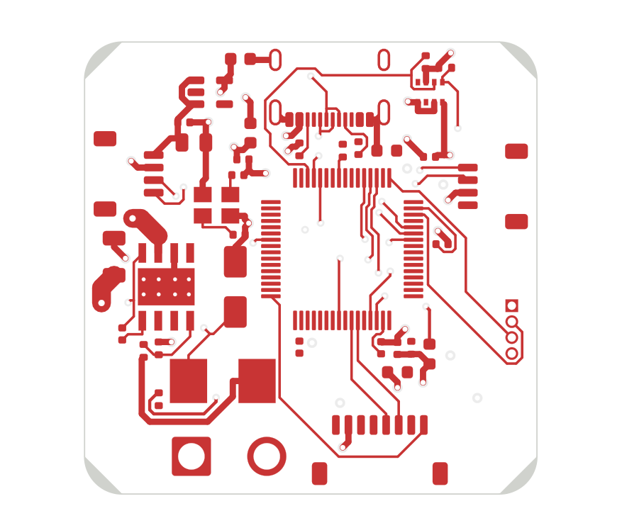
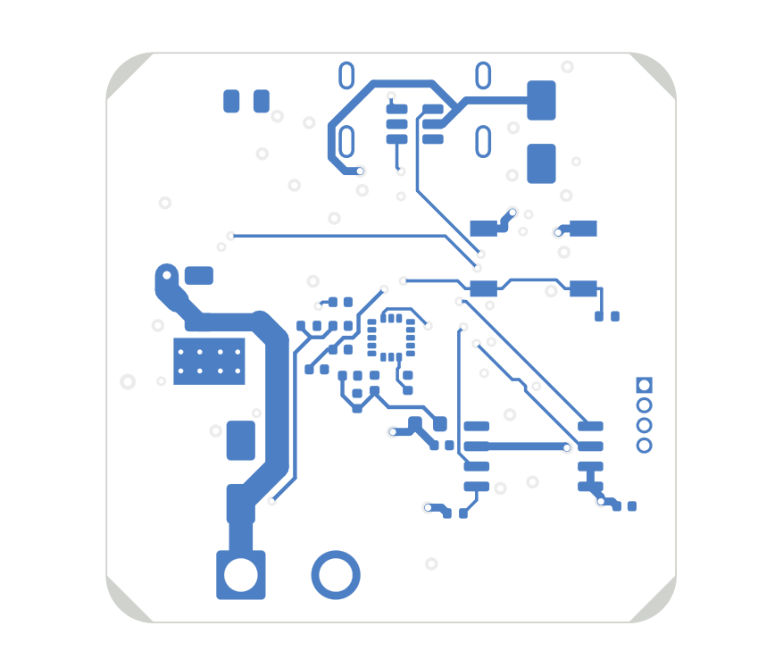
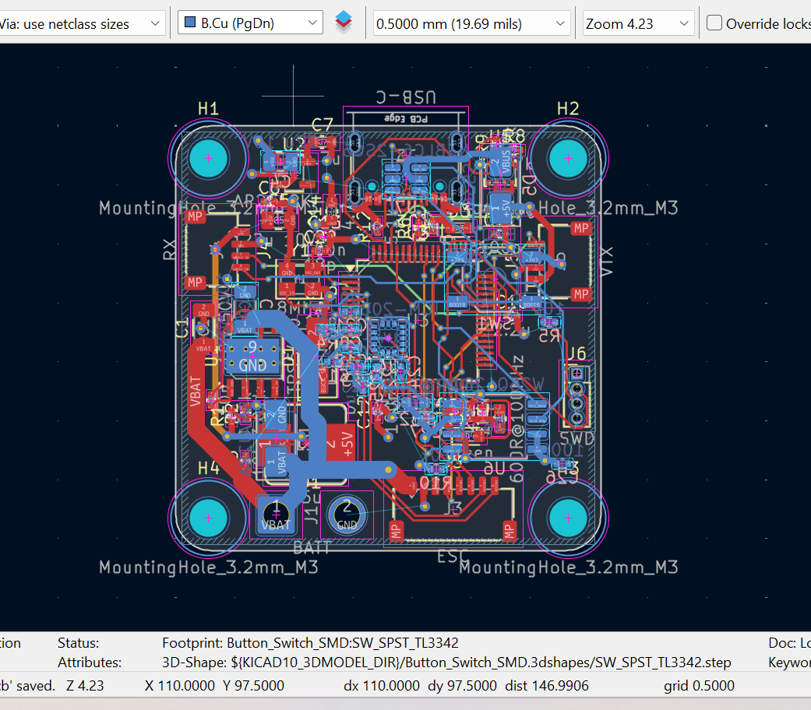

Designing a printed circuit board needs expertise that is scarce and slow to acquire. A beginner has to choose parts, derive component values from datasheets, connect hundreds of pins correctly and lay out a board that meets electrical rules. One wrong connection means a dead board, and every new fabrication run costs weeks and money that students and small hardware teams in Africa rarely have. Most have no senior engineer to review their work.
General AI chatbots don't fill this gap. They draw schematics badly, producing "ghost" wires that look connected but aren't, and they invent part numbers that don't exist. The help sounds confident but can't be trusted.
The model reasons and explains; the tools do everything that must be exact (coordinates, netlists, geometry, calculations). Live control uses KiCad 9/10's official API; everything else works on the files, so KiCad 7/8 is covered too.
| Test set | What was compared | Result |
|---|---|---|
| 13 official KiCad 7 demo projects (incl. hierarchical, bus-heavy designs) | Every net vs kicad-cli netlist export | 13 / 13 identical |
| VESC motor controller (open source, KiCad 4 legacy format) | Every net vs the project's own netlist | identical |
| KiCad 9/10 demos (Jetson carrier, CM5, VME) | Schematic nets vs the boards' nets | match* |
| Footprint flip to bottom side (file mode) | Pads, graphics, text vs KiCad's own flip, 12 footprint types × 4 rotations (48 footprints) | exact |
Brief: 36×36 mm flight controller with 30.5 mm M3 mounting and a 2–6S LiPo input. Parts: STM32F405 MCU, ICM-20602 IMU (SPI), BMP280 barometer (I2C), 128 Mbit log flash, TPS5430 5 V/3 A buck regulator, 3.3 V LDO, USB-C with ESD protection, ESC / receiver / video transmitter / SWD connectors.
| Stage | Result |
|---|---|
| Parts chosen | 61 parts, all from stock KiCad libraries |
| Values calculated (formula shown) | Buck feedback 9.31 kΩ / 3.01 kΩ → 4.998 V · crystal loads 2·(12−3) = 18 pF · battery divider 10 k/1 k (25.2 V → 2.29 V) · inductor ≈13.4 µH → 15 µH |
| Plan review before drawing | 0 errors · 0 warnings |
| Schematic | 4 hierarchical sheets, symbols grouped around their pins, no wires drawn |
| Verification of the finished drawing | 174 / 174 connections (100%) |
| Cross-check with KiCad's netlister | 79 / 79 nets agree |
| Deliberate mistakes injected | 2 / 2 caught with location |
| Board: 4 layers, 36×36 mm, two-sided | 65 footprints · 0 courtyard overlaps |
| Autorouting (Freerouting, 3 min) | 88–91% routed · 0 clearance errors from routing |
ERROR short: Planned nets I2C1_SCL, I2C1_SDA are connected together in the drawing.
I2C1_SCL: U3.61; I2C1_SDA: U5.3, R9.2 (SDA and SCL swapped on the barometer)
WARN global label 'SPI1_MISO' is not attached to a wire or pin; nearest pin is
U4.4 (SAO/SD0) 0.64 mm away (near-miss: move the label onto that pin end)
- +3V3, +5V, GND [power symbols] - VBAT [global labels: spans sheets]
- BUCK_SW Draw a wire from U1.8 (PH) at (78.74, 45.72) to C3.2 at (93.98, 40.64)
Draw a wire from C3.2 at (93.98, 40.64) to L1.1 at (99.06, 53.34)
Draw a wire from L1.1 at (99.06, 53.34) to D1.1 (K) at (87.63, 59.69)







| Next step | Purpose |
|---|---|
| Library of pre-verified circuit blocks (MCU core, regulators, USB, sensors) | Lets smaller, cheaper and offline models design reliably: they choose blocks instead of wiring every pin |
| More automatic checks (part voltage/current ratings, board fit, back-feed paths, missing pull-ups) | Turns expert "noticing" into pass/fail signals |
| Multi-board systems (connector pinouts across harnesses, power budget) | Products like printers and industrial machines are several boards |
| Public error-detection benchmark and model comparison | A measured detection rate across hundreds of injected mistakes |
| Fabricate and bring up the drone board | Close the loop from design to working hardware |